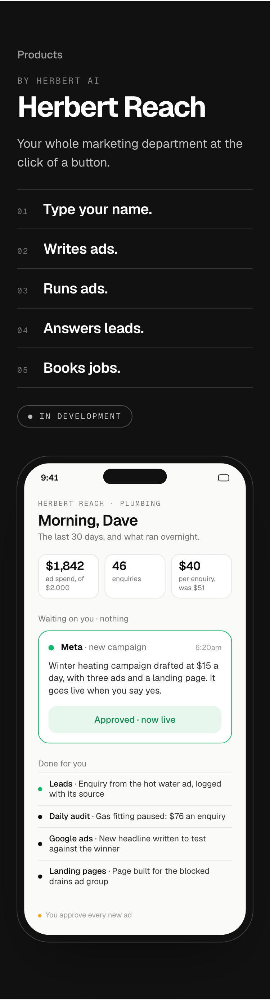
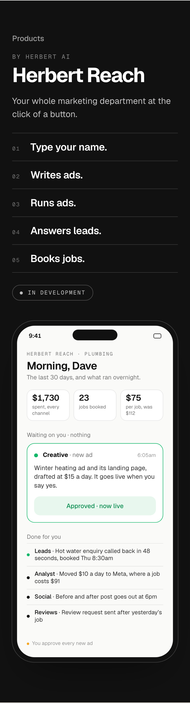
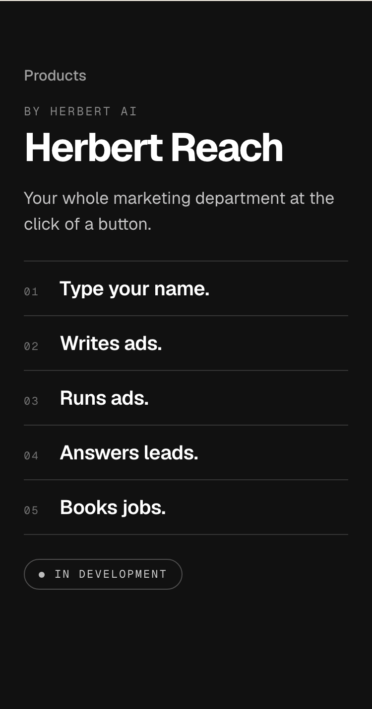

Detail 6 of 6, the last for this section. The whole band at 375, each option beside today. Checked at 320 as well.
TodayThe ads-only phone version: cost per enquiry, a Meta campaign card, a daily audit feed. It no longer matches the laptop dashboard or the story.

1. The full product on the phoneThe same phone, rebuilt to match the laptop: spend across every channel, jobs booked, cost per job; the Creative’s new ad and landing page waiting on you; a booked lead landing at the top. The story, then the owner running it from their phone. Recommended.

2. No phone versionThe story carries the band on its own: about half the height, nothing to show the product working.

3. Phone firstThe phone version straight under the line, the story after it as the caption. Shows the product first, but the story lands after a long scroll.